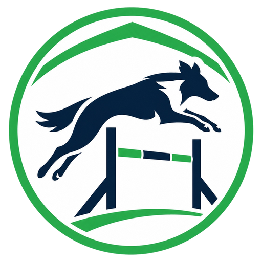
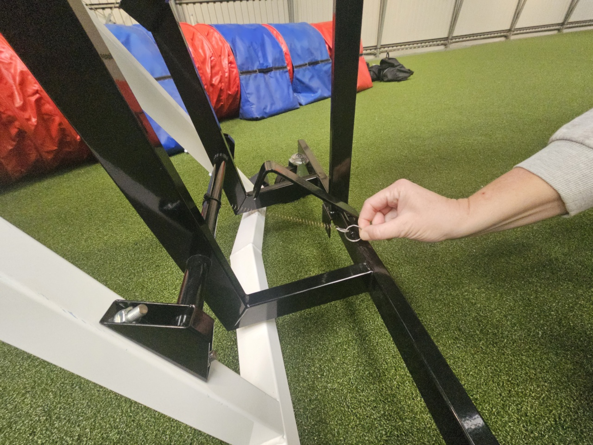

HALA ÚSTÍKladina Galican Soft Line je na kolečkách a díky naší úpravě (perko s háčkem) ji zvedne, přesune i položí jeden člověk — když dodrží správný postup. Prosíme, projděte si ho před první manipulací.
Na mechanismu je perko s háčkem. Před zvedáním NESMÍ být zaháknuté na kolíčku — jinak kladinu nezvednete.

Jděte na konec sestupné části kladiny a zvedněte ji vzhůru. Mechanismus se automaticky zahákne — sestupná část zůstane nad zemí a kladina dosedne na kolečka.
Stejně zvedněte i druhou sestupnou část. Kladina teď stojí celá na kolečkách — pomalu ji převezte, kam potřebujete.
Na místě zahákněte perko s háčkem na kolíček. Právě díky němu jde kladina položit jedním člověkem — mechanismus se při pokládání uvolní sám a nemusíte přidržovat kovové táhlo.
Sestupnou část lehce nadzvedněte a plynule ji pokládejte — mechanismus se odjistí a část dosedne na zem. Stejný postup zopakujte na druhé straně.
Kladina stojí na standardní výšce, obě sestupné části jsou na zemi, nic nestojí na kolečkách. Hotovo — díky!
Nejste si jistí? Zavolejte nám: +420 724 256 055. Poškození vzniklé nesprávnou manipulací jde k tíži nájemce (viz provozní řád).